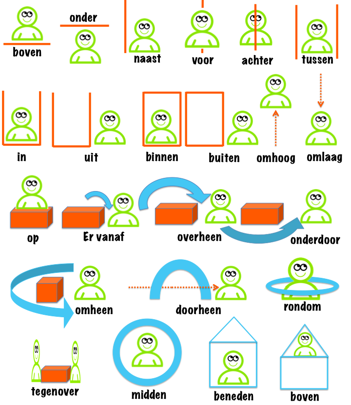

Phần 1 Các loại từ - Woordsoorten
1.1 Mạo từ - Artikle
Mạo từ een, de, het luôn đi với một danh từ.
Các trường hợp không cần sử dụng mạo từ đi với danh từ:
- tên người, thành phố, đất nước, tháng, ngôn ngữ
- danh từ không đếm được
- nghề nghiệp, chức vụ
- các danh từ trong trường hợp được dùng với nghĩa tổng
1.2 Danh từ - Substantief
Danh từ bao gồm tên người và những từ chỉ người, vật thể, con vật, và địa danh.
Cách chuyển danh từ có quy tắc từ dạng số ít (singularis) sang số nhiều (pluralis):
- + en đối với hầu hết danh từ
- + s đối với các danh từ có đuôi -el, -em, -en, -er, -e, -é, -ier
- + ’s đối với các danh từ có đuôi gồm một phụ âm + một nguyên âm dài (a,i,o,u,y)
Đối với trường hợp + en cần chú ý những điểm sau:
- một số trường hợp đặc phụ âm cuối cần phải chuyện đổi f → v, s → z rồi mới thêm en
- âm tiết cuối cùng chứa một nguyên âm dài + phụ âm thì rút gọn thành nguyên âm ngắn rồi mới thêm en
- âm tiết cuối cùng chứa một nguyên âm ngắn + phụ âm thì viết thêm phụ âm đó một lần nữa rồi mới thêm en
Một số ít danh từ không theo quy tắc ở trên khi chuyển sang số nhiều và phải học thuộc: de stad - de steden (thành phố), het kind - de kinderen (trẻ em)
1.3 Tính từ - Adjectief
Tính từ được sử dụng nhằm cung cấp thêm thông tin cho danh từ (người hay vật nào đó).
Tính từ trong tiếng Hà Lan bao gồm dạng nguyên thể và dạng nguyên thể +e.
- Tính từ đứng sau danh từ (phần vị ngữ) và sau động từ zijn thì giữ dạng nguyên thể (không thêm e).
- Tính từ đứng trước danh từ mà nó bổ nghĩa thì tuỳ thuộc vào loại danh từ:
- Thêm e nếu danh từ là de-woord hoặc danh từ số nhiều: zwarte koffie, zwarte koffies (cà phê đen)
- Giữ nguyên (không thêm e) nếu danh từ là het-woord và trước tính từ là een hoặc không có gì: een nieuw huis (một căn nhà mới), koud water (nước lạnh)
- Tuy nhiên nếu danh từ là het-woord và trước tính từ không phải là een hoặc không có gì thì vẫn thêm e: het nieuwe huis (căn nhà mới - xác định rõ), het koude water (nước lạnh - xác định rõ)
Đối với trường hợp +e cần chú ý những điểm sau:
1.4 Động từ - Verbum
Động từ là những từ chỉ hành động. Động từ dạng nguyên mẫu được gọi là infinitief. Động từ bị thay đổi tuỳ theo chủ ngữ (số ít hay số nhiều) và thì. Mục này chỉ sử dụng các động từ ở thì hiện tại.
1.4.1 Động từ tĩnh tại - Modale verba
Dưới đây là danh sách các động từ tĩnh tại và cách sử dụng đối với từng đại từ. Loại động từ này đi với động từ nguyên mẫu (infinitief). Động từ nguyên mẫu luôn ở cuối câu. Các thành tố khác nếu có sẽ được xen vào giữa phần động từ tĩnh tại và động từ nguyên mẫu.
| willen | moeten | kunnen | mogen | zullen | gaan | |
|---|---|---|---|---|---|---|
| ik | wil | moet | kan | mag | zal | ga |
| jij = je | wil/wilt | moet | kan/kunt | mag | zal/zult | gaat |
| u | wil/wilt | moet | kan/kunt | mag | zal/zult | gaat |
| hij | wil | moet | kan | mag | zal | gaat |
| zij = ze | wil | moet | kan | mag | zal | gaat |
| wij = we | willen | moeten | kunnen | mogen | zullen | gaan |
| jullie | willen | moeten | kunnen | mogen | zullen | gaan |
| zij = ze | willen | moeten | kunnen | mogen | zullen | gaan |
Chú ý: Cách chia dạng động từ này không giống với các động từ thông thường (xem phần Thì - Tijden).
- willen
- moeten
- kunnen
- mogen
- gaan
- zullen
1.4.2 Động từ phân tách tiền tố - Separabele verba
Loại động từ này gồm một giới từ (prepositie) đứng trước một động từ. Trong thì hiện tại, quá khứ và câu mệnh lệnh, hai yếu tố này bị tách nhau ra. Động từ đứng cạnh danh từ (trước hoặc sau tuỳ cấu trúc câu) trong khi giới từ luôn luôn đứng sau.
| Nguyên mẫu - Infinitief | Thì quá khứ - Imperfectum (OVT) |
|---|---|
| uitademen | Mario ademde diep uit? (Mario thở chậm ra.) |
| uitdoen | Ik deed mijn trui uit. (Tôi cởi áo len ra.) |
| Nguyên mẫu - Infinitief | Câu mệnh lệnh - Imperative (OVT) |
|---|---|
| uitsteken | Steek je tong eens uit. (Lè lưỡi của bạn ra.) |
1.5 Đại từ - Pronomen
1.5.1 Đại từ nhân xưng và sở hữu - Persoonlijk en possessief pronomen
Ở dạng chủ ngữ chú ý phân biệt zij là cô ấy hay bọn họ và u là bạn số ít hay số nhiều bằng động từ đi kèm (là số ít hay số nhiều). Xem thêm cách chia động từ trong phần thì.
Một số câu ví dụ cách dùng các dạng đại từ.
Mijn zus praat met mij. (Chị/em gái của tôi nói chuyện với tôi.)
Het boek is van mij. (Quyển sách này là của tôi).
Jouw zus praat met jou. (Chị/em gái của bạn nói chuyện với bạn.)
Het boek is van jou. (Quyển sách này là của bạn).
Uw zus praat met u. (Chị/em gái của bạn nói chuyện với bạn.)
Het boek is van u. (Quyển sách này là của bạn).
Zijn zus praat met hem. (Chị/em gái của anh ấy nói chuyện với anh ấy.)
Het boek is van hem. (Quyển sách này là của anh ấy).
Haar zus praat met haar. (Chị/em gái của cô ấy nói chuyện với cô ấy.)
Het boek is van haar. (Quyển sách này là của cô ấy).
Wij zijn Timon en Pumbaa. (Chúng tôi là Timon và Pumbaa.)
Onze zus praat met ons. (Chị/em gái của chúng tôi nói chuyện với chúng tôi.)
Het boek is van ons. (Quyển sách này là của chúng tôi).
Jullie zijn Timon en Pumbaa. (Các bạn là Timon và Pumbaa.)
Jullie zus praat met jullie. (Chị/em gái của các bạn nói chuyện với các bạn.)
Het boek is van jullie. (Quyển sách này là của các bạn.).
U zijn Timon en Pumbaa. (Các bạn là Timon và Pumbaa.)
Uw zus praat met u. (Chị/em gái của các bạn nói chuyện với các bạn.)
Het boek is van u. (Quyển sách này là của các bạn.).
Zij zijn Timon en Pumbaa. (Họ là Timon và Pumbaa.)
Hun zus praat met hen. (Chị/em gái của họ nói chuyện với các họ.)
1.5.2 Đại từ chỉ định - Demonstratief pronomen
Đại từ chỉ định bao gồm dùng để chỉ cái này (deze, dit) và cái kia (die, dat).
Trường hợp đại từ chỉ định đi với với danh từ số ít:
- de-woord thì dùng deze và die: de pen → deze pen → die pen (cái bút → cái bút này → cái bút kia)
- het-woord thì dùng dit và dat: het boek → dit boek → dat boek (quyển sách → quyển sách này → quyển sách kia)
Trường hợp đại từ chỉ định đi với với danh từ số nhiều thì luôn dùng deze và die.
- de pennen → deze pennen → die pennen (những cái bút → những cái bút này → những cái bút kia)
- de boeken → deze boeken → die boeken (những quyển sách → những quyển sách này → những quyển sách kia)
Trường hợp đại từ chỉ định đứng một mình (không đi với danh từ) thì luôn dùng dit và dat.
1.6 Số từ - Telwoord
1.6.1 Số đếm - Hoofdtelwoorden
Cách viết các số lớn 100:
| 100-110 | 111-120 | 121-999 |
|---|---|---|
| 100 honderd | ||
| 101 honderdenéén | 111 honderd(en)elf | 121 honderdeenentwintig |
| 102 honderdentwee | 112 honderd(en)twaalf | |
| 103 honderdendrie | 113 honderd(en)dertien | 263 tweehonderddrieënzestig |
| 104 honderdenvier | 114 honderd(en)veertien | |
| 105 honderdenvijf | 115 honderd(en)vijftien | |
| 106 honderdenzes | 116 honderd(en)zestien | |
| 107 honderdenzeven | 117 honderd(en)zeventien | |
| 108 honderdenatch | 118 honderd(en)atchtien | 888 achthonderdachtentachtig |
| 109 honderdennegen | 119 honderd(en)negentien | |
| 110 honderdentien | 120 honderd(en)twintig |
Một số ví dụ khác:
1.6.2 Số thứ tự - Rangtelwoorden
Cách chuyển số đếm thành dạng số thứ tự thì thêm +de hoặc +ste trừ vài trường hợp đặc biệt (1, 3, 8).
1.7 Giới từ - Preposities
Giới từ là từ chỉ mối quan hệ giữa các thành tố trong câu về không gian, thời gian, hoặc địa điểm. Giới từ thường được dùng theo nghĩa của giới từ (trên, dưới, trước, sau,…).

Nguồn: Beelddenkerslerenzo
Quy tắc dùng giới từ với thời gian:
- op + ngày trong tuần: op zaterdag (vào ngày thứ 7)
- om + thời điểm chính xác: om 6 uur (vào lúc 6 giờ)
- in + buổi trong ngày, tháng, mùa, năm: in de ochten (vào buổi sáng), in januari (vào tháng 1), in zomer (vào mùa hè), in 2045( vào năm 2045).